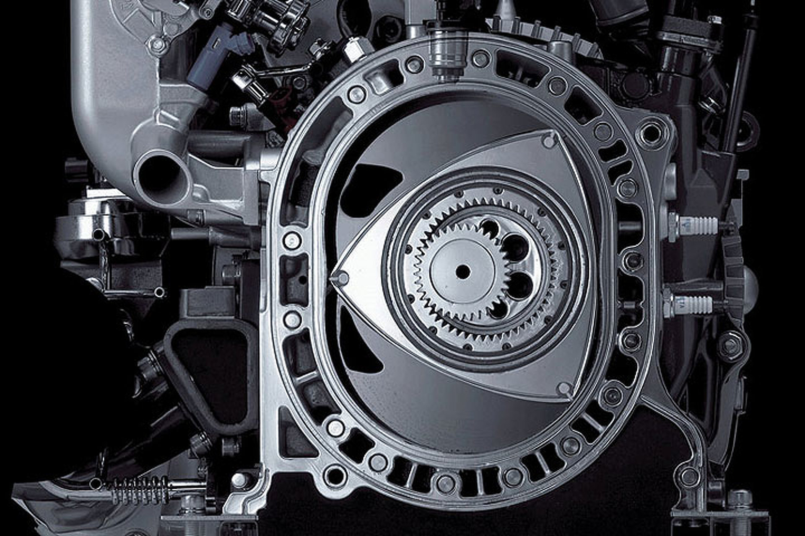

Поршневые двигатели внутреннего сгорания. В них рабочая камера находится внутри цилиндров, а тепловая энергия преобразуется в механическую работу посредством кривошипно-шатунного механизма, передающего энергию движения на коленчатый вал, с помощью которого приводится в движение машина.

Роторно-поршневые двигатели внутреннего сгорания. В моторах данного типа тепловая энергия преобразуется в механическую работу посредством вращения рабочими газами ротора специальной формы и профиля. Ротор движется по «планетарной траектории» внутри рабочей камеры, имеющей форму «восьмёрки», и выполняет функции как поршня, так и ГРМ (газораспределительного механизма), и коленчатого вала.